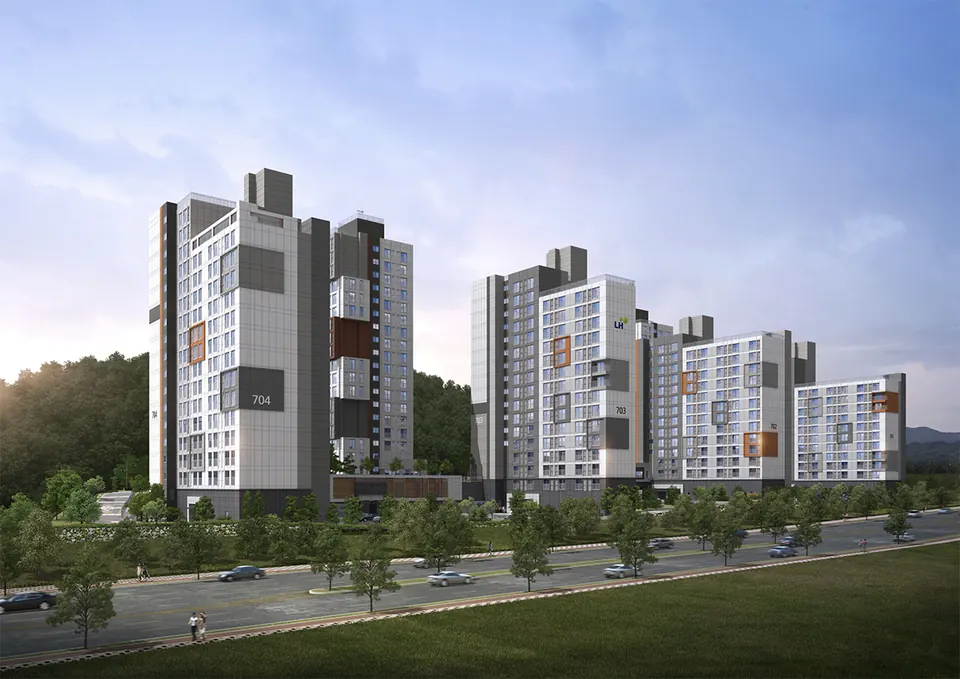
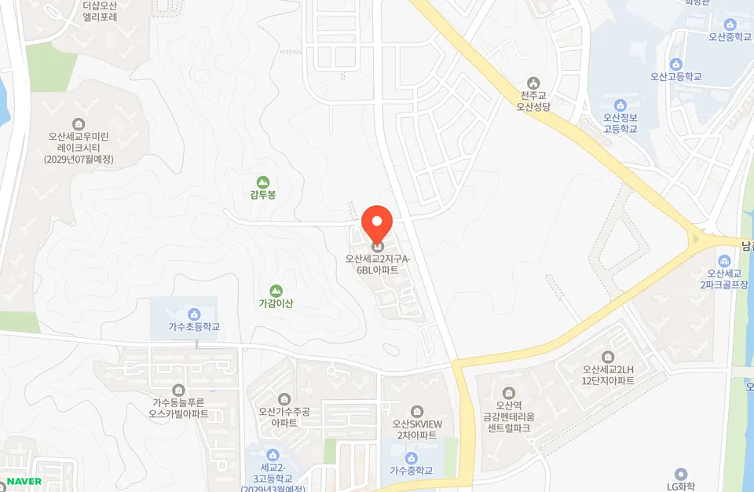

오산세교2 7단지 A-6블록 영구임대 예비입주자 보증금·월세
70세대 모집. 11.16(월)~11.18(수) 접수, 보증금 270만5,000원·월 5만3,890원(「가」군 · 공고문 기준 (「나」군은 보증금 1,578만4천원 · 월 11만6,680원)), 당첨자 발표 2027.2.23(화).
경기도 오산시 송로 11 (청학동, 오산세교2지구 A-6블록)
- 보증금
- 270만5,000원
- 공급
- 70세대
- 예비입주자 · 26D 일반 60명 + 주거약자용 10명
- 월세
- 5만3,890원
접수 ~
- 인터넷·모바일 접수11.16(월)
- 현장 접수11.17(화)
- 예비입주자 발표2027.2.23(화)
접수 시작 · 자격·서류를 미리 확인하세요
LH청약플러스 모집공고(11.2(월)) 원문 대조 · 최종 수정
3초 판단 오산세교2 7단지(A-6블록) 한눈에 보기
- 월세월 5만원대~11만원대주변 시세보다 월세 약 30만원 저렴 (추정)좋음
- 자격오산시 거주 · 소득 150% 이하무주택 세대 · 총자산 2억4,500만원 · 자동차 4,542만원 이하도 함께 봐요주의
- 살 수 있는 기간기본 4년 (2년 + 재계약 1회)재계약 때 예비자가 없으면 2년 더 · 법령 재계약 기준을 맞추면 계속 갱신보통
- 보증금보증금 270만~1,578만원「가」군 270만5천원 · 「나」군 1,578만4천원좋음
좋음·보통·주의는 이렇게 정해요
- 월세: 주변 시세(또는 공고의 시중시세)의 60% 이하면 좋음, 85% 이하면 보통, 그보다 비싸면 주의, 비교 전이면 표시 없음
- 자격: 무주택·계층 자격 말고 소득·자산 기준과 거주지역 제한이 없으면 좋음, 하나 있으면 보통, 둘 다 있으면 주의
- 살 수 있는 기간: 최장 10년 이상 살 수 있으면 좋음, 4~9년이면 보통, 그보다 짧으면 주의
- 보증금: 보증금이 1억원 이상이면 주의, 3천만원 이상이면 보통, 그보다 적으면 좋음
추천이 아니라 참고용이에요. 정해진 기준대로 붙이고, 숫자 근거는 아래 각 칸에 있어요.
넣을 만할까? 줍줍알람 한마디
오산시에 사는 무주택 세대라면 소득이 도시근로자 월평균소득 150% 이하까지 넣을 수 있는 영구임대 예비입주자 모집이에요.
26D는 지금 대기 중인 예비자가 0명이라, 빈집이 있으면 발표 뒤 바로 계약할 수도 있다고 공고문에 나와요. 다만 소득 완화로 들어가면 재계약이 기본 한 번이라 오래 살 계획이라면 이 조건이 걸려요.
오산세교2 7단지(A-6블록) 청약 일정
- 모집공고
~ 인터넷·모바일 접수다음첫날 10시 ~ 마지막 날 16시 · 공동인증서나 금융·네이버·토스·KB 인증서 필요- 현장 접수65세 이상 등 인터넷이 어려운 분만, 10~16시 LH 오산권주거복지지사(수청프라자 3층)
- 서류제출 대상자 발표16시 이후 LH청약플러스
~ 서류 제출온라인 또는 등기우편, 12.3 우체국 소인까지- 2027예비입주자 발표16시 이후 LH청약플러스·ARS 1661-7700 · 자격 조회 기간에 따라 늦어질 수 있어요
나도 넣을 수 있을까요? 30초 체크
- 공고일(2026.11.2) 현재 오산시에 주민등록이 돼 있다
- 세대원 모두 집(분양권 포함)이 없다
- 세대 월평균소득이 150% 기준 이하다 (1인 572만45원 · 2인 879만9,405원 · 3인 1,225만2,644원)
- 세대 총자산이 2억4,500만원 이하이고, 자동차가액이 4,542만원 이하다
- 서류제출 대상자로 뽑히면 11.27~12.3에 온라인이나 등기우편으로 서류를 낼 수 있다
0 / 5개 '예'
5개 모두 '예'면 이번 예비입주자 모집의 기본 신청 조건을 갖춘 거예요. 세부 기준은 모집공고로 확인하세요.
오산세교2 7단지(A-6블록) 임대료 vs 주변 시세
월세 약 30만원 저렴(추정)
같은 청학동 청학동웰스톤(오피스텔, 2008년식) 전용 27.5㎡ 신규 월세 거래와 이 공고 26D 「가」군 조건을 월세끼리 비교했어요. 일반(「나」군)은 보증금 1,578만4천원으로 비교 집보다 약 1,078만원 많고 월세는 약 23만원 적어서, 보증금·월세를 섞어 계산하지 않았어요. 비교 오피스텔은 10년 넘은 건물이에요.
국토교통부 실거래가 공개시스템 기준 · 같은 생활권·비슷한 면적의 최근 실거래와 비교한 추정이에요. 실제 시세와 다를 수 있고, 차익을 보장하지 않아요.
입주할 때·매달 나가는 돈
돈을 넣으면 보증금이 되는지, 보증금을 바꾸면 월세가 얼마나 달라지는지 계산해요.
2년마다 재계약하고, 재계약 때 소득이 기준을 넘으면 할증된 금액이 붙을 수 있어요. 자동차가액이 기준을 넘으면 재계약이 안 돼요.
보증금·월세는 LH 모집공고문(2026.11.2) 기준이에요. 26D와 26D(주거약자용)은 금액이 같고 「가」군·「나」군만 달라요. 보증금↔월세 전환은 공고문 전환이율(보증금을 늘릴 때 6%, 줄일 때 3.5%, 100만원 단위) 기준이에요. 관리비는 따로예요.
영구·국민·행복주택 차이가 궁금하면공공임대주택 종류별 자격·임대료·거주기간 →무주택 기준이 헷갈리면무주택 세대 기준 정리 →청약 전 주의점 — 이건 알고 넣으세요
- 재계약은 기본 한 번소득 완화로 입주하면 첫 2년 계약 뒤 재계약은 한 번만 보장되고, 그때 예비자가 없으면 한 번 더 할 수 있어요.
- 일반·주거약자용 중복 신청 금지26D와 26D(주거약자용)에 같이 넣으면 모두 무효예요. 주거약자용은 미달돼도 일반으로 돌리지 않아요.
- 계약 때 금액이 바뀔 수 있어요임대조건은 공고일 기준이라, 나중에 계약할 때 바뀌어 있으면 바뀐 금액으로 계약해요.
- 단지 주변 여건공고문에 항공기 소음 예상 지역이고, 남동쪽 약 1.1km에 열병합발전소, 약 1.4km에 하수처리장이 있다고 나와요.
타입·임대 조건
| 타입 | 대상 | 공급 | 보증금 · 월세 |
|---|---|---|---|
| 26D 「가」군 | 「가」군(생계·의료급여 수급자 등) | 60세대 | 270만5,000원월 5만3,890원 |
| 26D 「나」군 | 「나」군(일반) | 60세대 | 1,578만4,000원월 11만6,680원 |
| 26D(주거약자용) 「가」군 | 주거약자 · 「가」군(생계·의료급여 수급자 등) | 10세대 | 270만5,000원월 5만3,890원 |
| 26D(주거약자용) 「나」군 | 주거약자 · 「나」군(일반) | 10세대 | 1,578만4,000원월 11만6,680원 |
보증금의 5%(「가」군 13만5,250원 · 「나」군 78만9,200원)는 계약할 때, 95%는 입주할 때 내요. 보증금↔월세는 100만원 단위로 바꿀 수 있어서, 보증금을 최대로 늘리면 「가」군은 보증금 670만5천원·월 3만3,890원, 「나」군은 보증금 2,978만4천원·월 4만6,680원이 돼요(전환이율 6%·3.5%, 공고문 예시). 금액은 공고일 기준이라 계약할 때 바뀌어 있으면 바뀐 조건으로 계약해요.
신청 방법
- 인증서 준비개인용 공동인증서나 금융·네이버·토스·KB국민 인증서를 접수일 전까지 준비해요.
- 인터넷·모바일 접수LH청약플러스(apply.lh.or.kr) 또는 앱 → 청약 → 임대주택 → 청약신청에서 주택형을 고르고 배점 정보를 적어요. 11.16(월) ~ 11.18(수), 마지막 날은 16시까지예요. 65세 이상 등은 11.17(화) 현장 접수도 돼요.
- 서류 내기11.26(목) 16시 이후 서류제출 대상자 명단을 확인하고, 11.27(금) ~ 12.3(목)에 온라인이나 등기우편으로 내요. 우편은 오산시 내삼미로 79번길 24 수청프라자 2층 LH오산권주거복지지사(18114)로, 신청단지·접수번호를 적어요.
- 예비입주자 발표2027.2.23(화) 16시 이후 LH청약플러스나 ARS 1661-7700으로 확인해요.
- 계약빈집이 생기면 예비 순번대로 개별 연락하고, 전자계약이나 현장계약으로 맺어요.
평면도·면적
| 타입 | 전용면적 | 공급면적 |
|---|---|---|
| 26D 「가」군 | 26.35㎡약 8.0평 | 40.92㎡약 12.4평 |
| 26D 「나」군 | 26.35㎡약 8.0평 | 40.92㎡약 12.4평 |
| 26D(주거약자용) 「가」군 | 26.35㎡약 8.0평 | 40.92㎡약 12.4평 |
| 26D(주거약자용) 「나」군 | 26.35㎡약 8.0평 | 40.92㎡약 12.4평 |
위치·교통

경기도 오산시 송로 11 (청학동, 오산세교2지구 A-6블록) (오산세교2지구) · 네이버 지도에서 보기
신청 자격
- 거주지역
- 오산시 (공고일 2026.11.2 기준)
- 대상
- 성년(19세 이상) 무주택 세대원 · 자녀가 있는 미성년 세대주 등 일부는 미성년도 가능
- 소득
- 도시근로자 월평균소득 150% 이하 (1인 572만45원 · 2인 879만9,405원 · 3인 1,225만2,644원 · 4인 1,320만3,303원)
- 자산
- 총자산 2억4,500만원 · 자동차 4,542만원 이하 (둘 다 맞아야 해요) · 2023.3.28 이후 낳은 자녀가 있으면 자산 기준을 1명 10%p, 2명 이상 20%p 올려 줘요
- 청약통장
- 필요 없음 (공고문에 청약통장 조건이 없어요)
- 주거약자용
- 26D(주거약자용)은 65세 이상·장애인·상이 국가유공자 등 주거약자만 · 미달돼도 일반으로 돌리지 않아요
- 신청 수
- 1세대 1건 (일반·주거약자용 중복 신청 포함, 중복이면 전부 무효)
- 순번 정하는 법 (일반)
- 배점 합산(오산시 거주기간·나이·세대원 수·소득 수준 각 최대 20점 + 가점 10~20점) → 오산 전입이 오래된 순 → 세대원이 많은 순 → 나이 많은 순 → 추첨
- 순번 정하는 법 (주거약자용)
- 배점 합산(오산 거주 최대 5점 · 75세 이상 3점 · 세대원 2인 이상 2점 · 심한 장애 3점 · 수급자·차상위 2점) → 일반과 같은 순서
- 서류제출 대상자
- 모집 수의 1.5배 정도 뽑아요 · 자격 검증 뒤 적격자가 많으면 순서에 따라 떨어질 수 있어요
이런 분께 맞아요
이런 분이라면 볼 만해요
- 오산시에 사는 무주택 세대 중 소득이 평소 영구임대 기준을 넘던 분이번 공고는 소득 기준을 도시근로자 월평균소득 150% 이하로 넓혔어요.
- 생계·의료급여 수급자 등 「가」군에 해당하는 분「가」군은 보증금 270만5천원·월 5만3,890원으로 낮은 조건이 적용돼요.
- 65세 이상이거나 장애가 있어 편의시설이 필요한 분주거약자용 26D 10명을 따로 뽑고, 편의시설이 설치된 집이에요.
이런 분은 다시 생각해 보세요
- 오산시 밖에 사는 분공고일 현재 오산시에 살아야 신청할 수 있어요.
- 입주 날짜가 정해져야 하는 분예비입주자 모집이라 빈집이 생겨야 순번대로 계약해서, 언제 들어갈지 정해져 있지 않아요.
- 소득이 높은데 오래 살 집을 찾는 분완화 기준으로 들어가면 재계약이 기본 한 번이라, 그 뒤엔 법령 재계약 기준을 맞춰야 계속 살 수 있어요.
공급 정보
- 시행
- 한국토지주택공사
- 문의
- 1600-1004
- 이번 모집 타입
- 26D 건설 242호 · 26D(주거약자용) 14호 (둘 다 대기 예비자 0명) · 26DB 5호는 대기 예비자 10명이라 이번엔 모집하지 않아요
- 첫 입주
- 2023.8 · 철근콘크리트 벽식구조 · 지역난방
- 재계약
- 소득 완화 입주자는 첫 2년 뒤 재계약 1회(2년) · 그때 예비자가 없으면 1회 더 · 법령 재계약 기준을 맞추면 계속 갱신
- 분양전환
- 없음
- 가까운 역
- 오산역(수도권 1호선)·오산역환승센터 직선 약 1.3km (공고문)
- 현장 접수처
- LH 오산권주거복지지사 (오산시 내삼미로79번길 24 수청프라자 3층) · 신분증·등본·가족관계증명서 등 지참, 미지참 시 접수 불가
공식 공고문 확인
신청 전에 모집공고 원문을 꼭 확인하세요. 타입·계층별 보증금과 세부 자격은 공고문에 있어요.
LH청약플러스에서 공식 공고 보기자주 묻는 질문
오산세교2 영구임대 신청 자격은?
공고일(2026.11.2) 현재 오산시에 사는 성년 무주택 세대원이에요. 소득은 도시근로자 월평균소득 150% 이하(1인 572만45원), 총자산 2억4,500만원·자동차 4,542만원 이하여야 해요.
오산세교2 7단지 보증금과 월세는?
26D 기준 「가」군은 보증금 270만5천원·월 5만3,890원, 「나」군(일반)은 보증금 1,578만4천원·월 11만6,680원이에요. 주거약자용도 같은 금액이고, 보증금을 늘리면 월세를 줄일 수 있어요.
「가」군과 「나」군은 어떻게 나뉘나요?
「가」군은 생계·의료급여 수급자, 소득인정액이 수급자 수준인 국가유공자 등, 위안부 피해자, 지원대상 한부모가족, 그 밖에 소득인정액이 생계·의료급여 선정 기준 이하인 분이에요. 나머지는 「나」군이에요.
현장 접수도 되나요?
65세 이상 등 인터넷 접수가 어려운 분만 11.17(화) 10~16시에 LH 오산권주거복지지사에서 받아요. 서류를 안 가져가면 접수할 수 없어요.
예비입주자는 바로 입주하나요?
빈집이 생기면 예비 순번대로 계약해요. 공고문에는 26D 대기 예비자가 지금 0명이라 발표 뒤 바로 계약할 수도 있다고 나오지만, 빈집이 있는지에 따라 달라요. 발표는 2027.2.23(화)이에요.
예비 순번은 어떻게 정하나요?
배점 합산 순이에요. 오산시 거주기간·나이·세대원 수·소득 수준이 각각 최대 20점이고 가점이 10~20점이에요. 점수가 같으면 오산 전입이 오래된 순 → 세대원이 많은 순 → 나이 많은 순 → 추첨이에요.
오산세교2 영구임대 몇 년 살 수 있나요?
계약은 2년이에요. 소득 완화로 들어가면 재계약은 한 번만 되고, 그때 예비자가 없으면 한 번 더 할 수 있어요. 법령의 재계약 기준을 맞추면 계속 갱신할 수 있어요.
신청 전에 읽어볼 가이드
경기에서 곧 접수하는 공고
출처
LH청약플러스 예비입주자 모집공고문 (모집공고일 2026.11.2(월)) 기준
자격·임대조건·배점·재계약 조건·일정: LH 예비입주자 모집공고문(2026.11.2)
시세 비교 실거래: 국토교통부 실거래가 공개시스템 기준
지도 © NAVER Corp.
최종 수정 · 내용이 다르면 오류 알려주기
정보 제공 목적이며 투자 권유가 아니에요. 신청 전 모집공고 원문을 꼭 확인하세요.